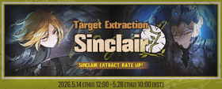

Limbus Company Identities
Ovo je wikipedia za Limbus Company identities
Ovo je stranica za upoznavanje Limbus Company identitiesa
Uvod u Identities
- Umjesto standarnog pullanja limited karaktera, u ovoj igrici se radi pullanje za Identities
- Svaki Identity predstavlja verziju istog lika iz alternativne dimenzije ili druge necega nez.
- Dobivanjem novog ID-a mijenja tome liku izgled, vještine (skills) i pasivne efekte
Opširnije o Identities
- Dijele se po rijetkosti od 0 (odnosno base ID) sve do najjačih 000 (Tri nula) verzija
- Svaki ID koristi specifične grijehe (Sin skills) i tipove grijeha koji su ključni za slaganje timova
Obširnurnije o Identities
- Ne možete koristiti dva drugačija ID-a za istog Sinnera u istoj borbi
- ID-evi mjenjaju brzinu punjenja resursa za aktivaciju tuff E.G.O napada
- Kroz Thread Spinning i skupljanje fragmenata možete besplatno otključati ID-eve u trgovini
↓Lista trenutnih događanja↓
- Limited banner - Ryōshū -18.6 - 06.7

- Limited banner - Sinclair -15.6 - 09.13
- Limited event - Twinning Threads -02.6 - 06.7
- Limited event - Nocturnal Sweeping - 05.2 - 04.7
Tier - lista novih Identitija
S - tier
Blade of the House of Spiders Ryōshū
- Bleed  i Poise
i Poise  hybrid dps
hybrid dps
- Navodno jako tuff playstyle, videl sam da ima mehaniku da celi svoj tim zakolje al onda celi neprijateljski one shotta
The Thumb East Capo IIII Meursault
- Burn  i Tremor
i Tremor  hybrid dps
hybrid dps
- Neki tatica isto ima bolesni moveset kaj spali celi tim i ima napad s onak 9 coina i ak dojde na red sam pobedis basically i jos pisem da lepse zgleda div da ima da da
The Middle Big Brother Heathcliff
- Burn i Bleed hybrid dps
- Ovoga se secam u cantu od Ishmael je taj ID imal svog bosa nisam ga mogel 2 tjedna prejti tak je boelsni isto ko ovaj ID
A - tier
[The Manager of La Manchaland] Don Quixote
- Pure Bleed dps
- Tako volim ovu zenu ozenil bi se da mogu, ima tako jebeni moveset ima brat onak 9 subskills i otkljucas ih tak da pullas za ostale Bloodfiende basjetuffff
Kurokumo Clan Captain Ishmael
- Bleed dps i Bleed stacker
- Neki tatica isto ima bolesni moveset kaj spali celi tim i ima napad s onak 9 coina i ak dojde na red sam pobedis basically i jos pisem da lepse zgleda div da ima da da
B - tier